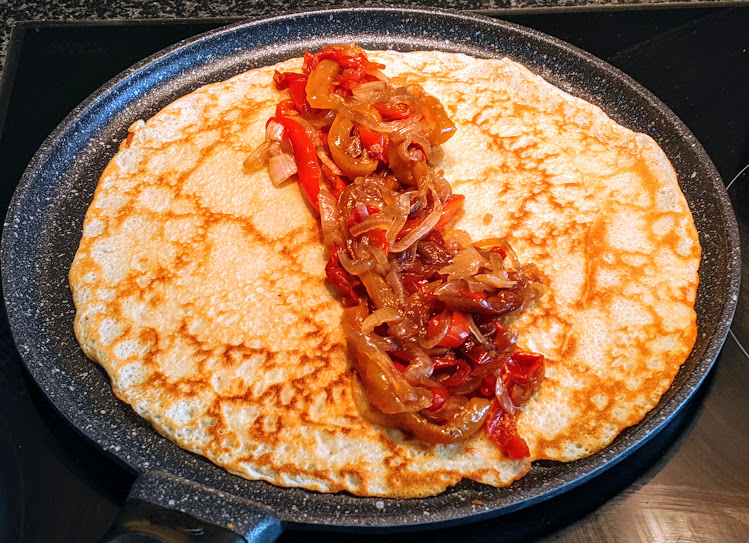

..@..♦.D.

|
Présentation 
|
Blog
|
Recettes
|

Ici avec des poivrons poêlés au miel
Pour 2 personnes (environ 9 crêpes) :
Remarque : on peut remplacer le lait par de la bière blonde pas trop forte, on peut dans ce cas en mettre un peu plus (par exemple un peu moins d'un demi-litre). C'est plus léger et croustillant avec de la bière, et plus gourmand avec du lait.
Remarque 2 : si on veut plutôt faire une pile de crêpes en avance et tout manger en même temps plutôt que les manger au fur et à mesure, une bonne façon de les maintenir au chaud est de les empiler entre deux assiettes creuses, le tout posé sur un saladier ou gros bol rempli d'eau bouillante.